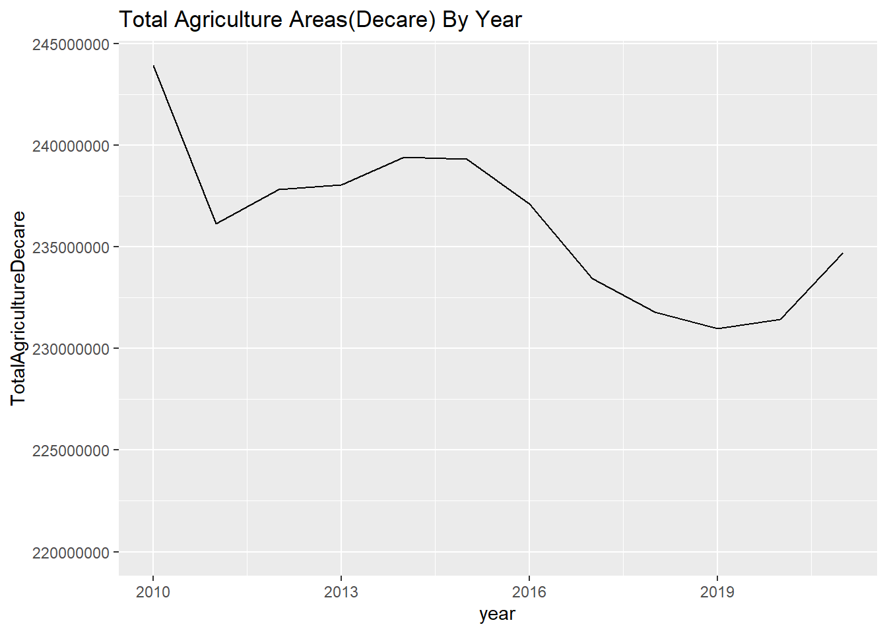
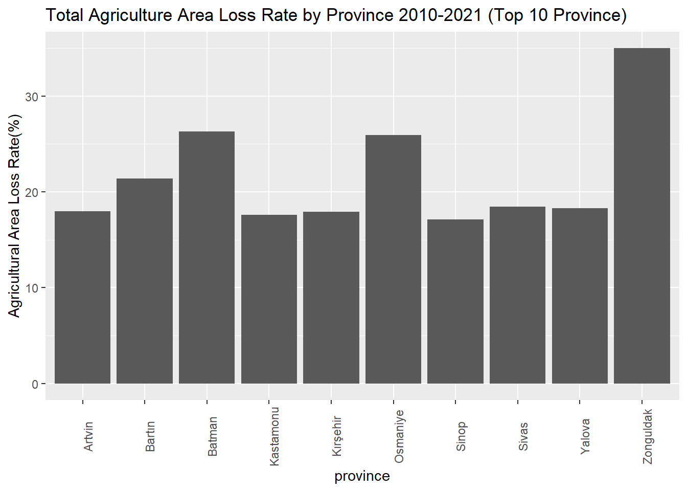
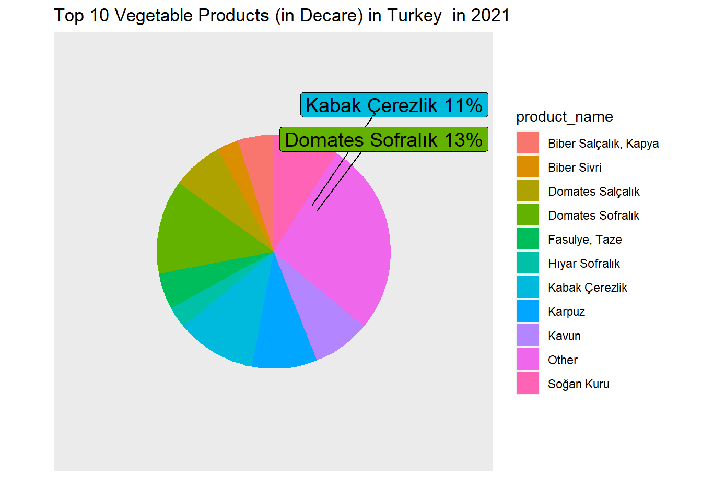
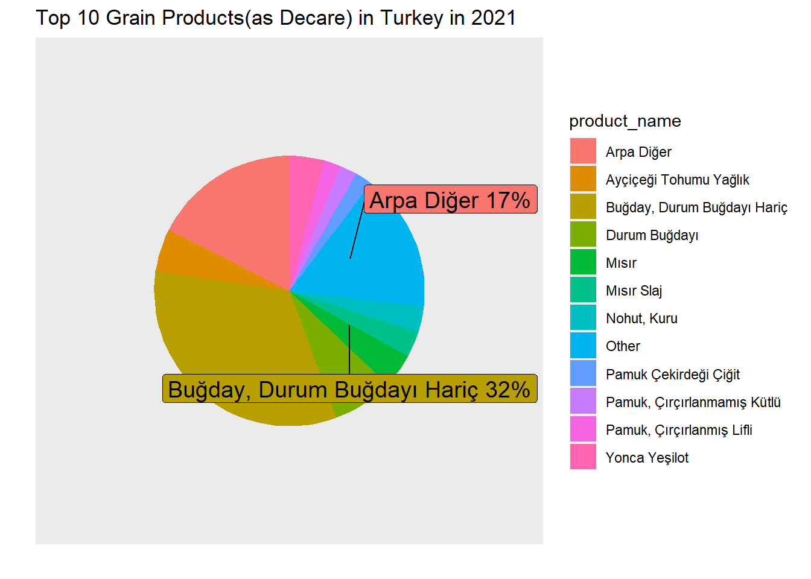
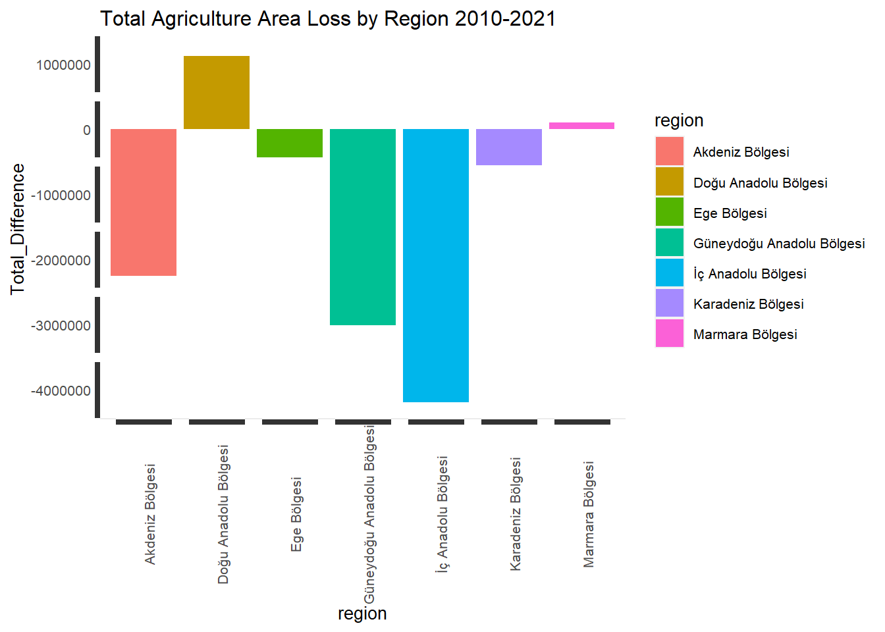

Agriculture in Turkey - EDA is the part 2 of the Group Project: Agriculture in Turkey
We start by loading our dataset that we prepare in the Group Project: Agriculture in Turkey - Preprocessing
Call necessary libraries
#install.packages("readxl")
#install.packages("ggrepel")
library(readxl)
library(lubridate)
library(dplyr)
library(tidyverse)
library(ggplot2)
library(tidyr)
library(ggrepel)Load the Data
# Prepare data
tarim <- readRDS("data//tarim.rds")
meyve <- readRDS("data//meyve.rds")
sebze <- readRDS("data//sebze.rds")
tahil <- readRDS("data//tahil.rds")Total Agriculture Areas
Agriculture areas are shrinking slightly
df <- tarim %>%
group_by(year) %>%
summarise(TotalDecare=sum(decare))
ggplot(data=df, aes(x=year, y=TotalDecare)) +
geom_line() +
ylim(220000000,max(df$TotalDecare))+
ggtitle("Total Agriculture Areas(Decare) By Year")
Between 2010-2011, biggest agricultural area lost is happened. In 2011-2015, it seems to be good years for Agriculture in terms of magnitude of the areas. However, after 2015, general trend moves towards to losing the Agricultural areas, after 2019 there seems to be first improvement, interestingly first improvement is in 2020, “the pandemic year” but in general in 11 years, size of the agricultural areas moving downwards.
Yearly agriculture areas
Add previous decares to the dataframe
df_1 <- tarim %>%
arrange(province, year) %>%
group_by(province) %>%
mutate(prev_decare = lag(decare)) %>%
ungroup()
head(df_1)# A tibble: 6 × 5
province province_code year decare prev_decare
<chr> <chr> <dbl> <dbl> <dbl>
1 Adana 1 2010 5506353 NA
2 Adana 1 2011 4962979. 5506353
3 Adana 1 2012 4807968 4962979.
4 Adana 1 2013 4751612. 4807968
5 Adana 1 2014 4982042. 4751612.
6 Adana 1 2015 4887150 4982042.If we look at year by year lost, the biggest lost was in Sivas, 2011 with 2.290.480 decare loss. Second is Kars with 1.628.918, third is Konya with 1.526.849. However, Konya’s total agriculture areas are greater than others. Rate of yearly difference and decare will be another indicator.
df_1 <- df_1 %>%
mutate(difference = (decare-prev_decare))
arrange(df_1, difference)# A tibble: 972 × 6
province province_code year decare prev_decare difference
<chr> <chr> <dbl> <dbl> <dbl> <dbl>
1 Sivas 58 2011 7298275 9588755 -2290480
2 Kars 36 2013 2118640 3747558 -1628918
3 Konya 42 2011 19242360 20769209 -1526849
4 Şanlıurfa 63 2011 11444392. 12591457 -1147065.
5 Yozgat 66 2013 5991422 6985982 -994560
6 Konya 42 2017 18854582 19636340. -781758.
7 Şanlıurfa 63 2012 10719605 11444392. -724787.
8 Adana 1 2011 4962979. 5506353 -543374.
9 Şanlıurfa 63 2018 10543716 11079753 -536037
10 Kahramanmaraş 46 2012 3225058. 3753120. -528062.
# … with 962 more rowshead(df_1)# A tibble: 6 × 6
province province_code year decare prev_decare difference
<chr> <chr> <dbl> <dbl> <dbl> <dbl>
1 Adana 1 2010 5506353 NA NA
2 Adana 1 2011 4962979. 5506353 -543374.
3 Adana 1 2012 4807968 4962979. -155011.
4 Adana 1 2013 4751612. 4807968 -56356.
5 Adana 1 2014 4982042. 4751612. 230430
6 Adana 1 2015 4887150 4982042. -94892.If we sort according to rate of difference Ardahan,2014 is the first with 0.7, Kars,2013 and Karabük,2018 are the second and Third in terms of yearly agriculture area lost.
df_1 <- df_1 %>%
mutate(difference_rate = round(difference/decare,2))%>%
arrange(df_1, difference_rate)
head(df_1)# A tibble: 6 × 7
province province_code year decare prev_decare difference difference_rate
<chr> <chr> <dbl> <dbl> <dbl> <dbl> <dbl>
1 Adana 1 2010 5506353 NA NA NA
2 Adana 1 2011 4962979. 5506353 -543374. -0.11
3 Adana 1 2012 4807968 4962979. -155011. -0.03
4 Adana 1 2013 4751612. 4807968 -56356. -0.01
5 Adana 1 2014 4982042. 4751612. 230430 0.05
6 Adana 1 2015 4887150 4982042. -94892. -0.02Interestingly, yearly loss is greater in the first half of the decade, but overall loss is increasing year by year, let’s visualise this by adding cumulative loss column.
If we look at total lost, Şanlıurda, Konya ans Sivas are the three big cities
df_p <- df_1 %>%
group_by(province) %>%
summarise('TotalDifference'=sum(difference, na.rm=TRUE),'TotalRate'=sum(difference_rate, na.rm=TRUE)) %>%
arrange(TotalDifference)
knitr::kable(head(df_p),caption = "Total Agriculture Lost Areas by Province 2010-2021")| province | TotalDifference | TotalRate |
|---|---|---|
| Şanlıurfa | -2145906 | -0.19 |
| Konya | -2058950 | -0.11 |
| Sivas | -1771190 | -0.26 |
| Yozgat | -1191803 | -0.19 |
| Kırşehir | -712105 | -0.23 |
| Çorum | -679593 | -0.12 |
df_p <- df_p %>%
arrange(TotalDifference) %>%
mutate(TotalDifference=TotalDifference*-1)
ggplot(data=head(df_p,10), aes(x=province, y=TotalDifference)) +
geom_bar(position="dodge",stat="identity") +
ggtitle("Total Agriculture Area Loss by Province 2010-2021 - Top 10 Province") +
theme(text = element_text(size = 10),element_line(size =15),axis.text.x = element_text(angle = 90))Zonguldak lost almost half of the agricultural areas in 11 years
df_p <- df_p %>%
arrange(TotalRate)
knitr::kable(head(df_p),caption = "Total Agriculture Lost Areas by Province 2010-2021")| province | TotalDifference | TotalRate |
|---|---|---|
| Zonguldak | 218204.5 | -0.46 |
| Osmaniye | 431321.0 | -0.37 |
| Kars | 61045.0 | -0.31 |
| Batman | 330415.0 | -0.31 |
| Karabük | 85981.0 | -0.29 |
| Sivas | 1771190.0 | -0.26 |
df_o <- df_1 %>%
group_by(province) %>%
summarise('TotalYearlyDifferenceRate'=sum(difference_rate, na.rm=TRUE)) %>%
arrange(TotalYearlyDifferenceRate) %>%
mutate(TotalYearlyDifferenceRate=-1*TotalYearlyDifferenceRate)
ggplot(head(df_o,10), aes(x=province, y=TotalYearlyDifferenceRate)) +
geom_bar(position="dodge",stat="identity") +
ggtitle("Total Agriculture Area Loss Rate by Province 2010-2021") +
theme(axis.text.x = element_text(angle = 90))
Distribution of Agricultural Production
Fruits
meyve_dekar <-
meyve %>%
filter(str_trim(unit)=='Dekar')
total = sum(meyve_dekar[, 'production'],na.rm=TRUE)
grouped_data <- meyve_dekar %>%
group_by(product_name) %>%
summarise(TotalbyName = sum(production,na.rm=TRUE)) %>%
mutate(rate = round((TotalbyName/total)*100),2)
plot_data <- grouped_data %>%
mutate(rank = rank(-TotalbyName),
product_name = ifelse(rank <= 10, product_name, 'Other'))
ggplot(plot_data, aes(x="", y=rate, fill=product_name)) +
geom_bar(stat="identity", width=1) +
coord_polar("y", start=0) +
geom_label_repel(data = plot_data,
aes(y = rate, label = paste0(product_name, rate,"%")),
size = 5, nudge_x = 1, show.legend = FALSE) +
theme(axis.text = element_blank(),
axis.ticks = element_blank(),
panel.grid = element_blank())+
ggtitle("Top 10 Fruit Production (Decare) in Turkey between 2010-2021")Vegetables
total = sum(sebze[, 'decare'],na.rm=TRUE)
grouped_data <- sebze %>%
group_by(product_name) %>%
summarise(TotalbyName = sum(decare,na.rm=TRUE)) %>%
mutate(rate = round((TotalbyName/total)*100),2)
plot_data <- grouped_data %>%
mutate(rank = rank(-TotalbyName),
product_name = ifelse(rank <= 10, product_name, 'Other'))
ggplot(plot_data, aes(x="", y=rate, fill=product_name)) +
geom_bar(stat="identity", width=1) +
coord_polar("y", start=0) +
geom_label_repel(data = plot_data,
aes(y = rate, label = paste0(product_name, rate,"%")),
size = 5, nudge_x = 1, show.legend = FALSE) +
theme(axis.text = element_blank(),
axis.ticks = element_blank(),
panel.grid = element_blank())+
ggtitle("Top 10 Vegetable Production (Decare) in Turkey between 2010-2021")
Grain
total = sum(tahil[, 'decare'],na.rm=TRUE)
grouped_data <- tahil %>%
group_by(product_name) %>%
summarise(TotalbyName = sum(decare,na.rm=TRUE)) %>%
mutate(rate = round((TotalbyName/total)*100),2)
plot_data <- grouped_data %>%
mutate(rank = rank(-TotalbyName),
product_name = ifelse(rank <= 10, product_name, 'Other'))
ggplot(plot_data, aes(x="", y=rate, fill=product_name)) +
geom_bar(stat="identity", width=1) +
coord_polar("y", start=0) +
geom_label_repel(data = plot_data,
aes(y = rate, label = paste0(product_name, rate,"%")),
size = 5, nudge_x = 1, show.legend = FALSE) +
theme(axis.text = element_blank(),
axis.ticks = element_blank(),
panel.grid = element_blank())+
ggtitle("Top 10 Grain Production(Decare) in Turkey between 2010-2021")
Climate Indicators and Agrriculture Areas
In this section we will compare the yearly average temperatures with the agriculture areas. Weather data is gathered from TradingEconomics.
Increase in average temperature in Turkey in 2018, also coincides with the decrease in Agriculrural area. Note that we need further statistical tests to show the relation between, this presentations only shows the raw data.
temperature = read_excel("data//temp.xlsx")
df <- tarim %>%
group_by(year) %>%
summarise(TotalDecareNormalized=sum(decare)/ 20000000)
df_t <- df %>%
inner_join(temperature)Joining, by = "year"ggplot(df_t, aes(year)) +
geom_line(aes(y = TotalDecareNormalized, colour = "Total Decare (1/20000000)")) +
geom_line(aes(y = temperature, colour = "Temperature")) +
ylab(NULL) +
ggtitle("Average Temperature vs Total Agricultural Area") CO2 emission is also an important metric for measuring the climate change. CO2 emissions (metric tons per capita) Carbon dioxide emissions are those stemming from the burning of fossil fuels and the manufacture of cement. They include carbon dioxide produced during consumption of solid, liquid, and gas fuels and gas flaring. WorldBank launches the CO2 emissions (metric tons per capita) data for every country. I used WorldBank
Note that, Data consists of the CO2 emission for 2009-2019
co2 = read_excel("data//co2.xlsx")
df_t$year<-as.character.Date(df_t$year)
df_t_c <- df_t %>%
inner_join(co2, by='year')
ggplot(df_t_c, aes(year)) +
geom_line(aes(y = TotalDecareNormalized, colour = "Total Decare (1/20000000)", group=1)) +
geom_line(aes(y = CO2emissions, colour = "CO2 Emission(Ton Per Capita)", group=2)) +
geom_line(aes(y = temperature, colour = "Temperature", group=3)) +
ylab(NULL) +
ggtitle("Average Temperature, CO2 Emission and Total Agricultural Area in Turkey") 
Most efficient Fruits in Turkey
Production in kg per tree is as follows, is seems Apple is the winner here too.
df_e <- meyve %>%
filter(str_trim(unit)=='Kg/Meyve Veren Ağaç')%>%
group_by(product_name,unit) %>%
summarise(toplam = sum(production, na.rm = TRUE)) %>%
arrange(desc(toplam))
knitr::kable(head(df_e),caption = "Fruit Efficiency (KG % Per Tree)")| product_name | unit | toplam |
|---|---|---|
| Elma Starking | Kg/Meyve Veren Ağaç | 41119 |
| Elma Golden | Kg/Meyve Veren Ağaç | 40949 |
| Diğer Elmalar | Kg/Meyve Veren Ağaç | 33089 |
| Armut | Kg/Meyve Veren Ağaç | 31858 |
| Elma Granny Smith | Kg/Meyve Veren Ağaç | 30369 |
| Elma Amasya | Kg/Meyve Veren Ağaç | 30143 |
Let’s group all fruits containing “Elma” under the Elma.
meyve_group <- meyve
meyve_group$product_name <- gsub(".*Elma.*", "Elma", meyve$product_name)
df_elma <- meyve_group %>%
filter(str_trim(unit)=='Kg/Meyve Veren Ağaç')%>%
group_by(product_name,unit) %>%
summarise(toplam = sum(production, na.rm = TRUE)) %>%
arrange(desc(toplam))
ggplot(data=df_elma, aes(x=product_name, y=toplam)) +
geom_bar(position="dodge",stat="identity") +
ggtitle("Fruit Efficiency (KG % Per Tree)") +
theme(text = element_text(size = 10),element_line(size =15),axis.text.x = element_text(angle = 90))